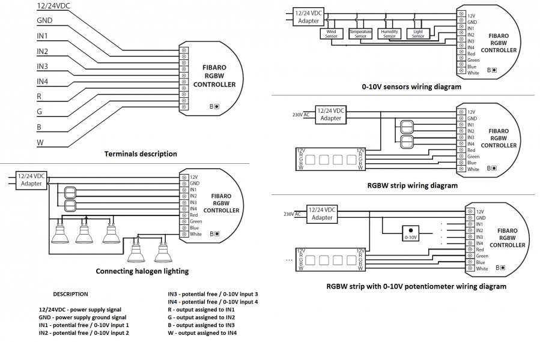

FIB_FGRGB-101
Firmware Version : 22.22 |
 |
Quick StartA This device is a Z-Wave Actuator. Triple click the B-button or any switch connected to I1-I4 inputs confirms Inclusion or Exclusion. The device turns into autoinclusion mode when powered up the first time. Please refer to the chapters below for detailed information about all aspects of the products usage. |
Product description
The Fibar RGBW Module allows controlling 4-color LED strips via Z-Wave wirelessly and locally utilizing a traditional wall switch. Beside the traditional RGB channels it also supports an additional white light channel, which allows adding pastel to the colour scheme. The device is placed in a wall box right behind the normal switch. The switch is not longer directly connected to the load but acts as an input device for the Fibar insert that is controlling the load. The solution works with all switch designs or potentiometers with or without neutral position as long as there is enough space in the wall box behind the switch. The device is just 15 mm height. The available space depends on the size of the traditional switch, the dimensions of the wall box and the amount of additional cabling placed in this box. The device must be powered by a 12 V external power supply.
Installation Guidelines

- Before installation ensure the voltage supply is disconnected.
- Connect Fibaro RGBW Controller according to wiring diagram. First, connect outputs (R,G,B,W) RGB/RGBW/LED diodes or Halogen lights, or inputs (I1-I4). Second, connect voltage supply.
- The device must be powered by a dedicated stabilized power adapter (12V / 24V DC).
- Turn the voltage on.
- Include the module into the Z-Wave network.
Note:
- Fibaro RGBW Controller is dedicated to operate in low voltage circuits of 12VDC or 24VDC. Connecting higher voltage load may result in Fibaro RGBW Controller damage.
- Fibaro RGBW Controller must be powered by the same voltage as the connected light source. I.e. if controlling 12V LED strip, the module must be connected to 12V power supply. Similarly, if controlling 24V RGBW strip, Fibaro RGBW Controller must be powered by 24V voltage supply.
- Fibaro RGBW Controller has 0-10V input. There is no 0-10V output. Output is controlled by PWM at 244Hz.
- Sensors using 0-10V interface use wire connection to inputs I1 - I4. Maximum length of 0-10V connection line is 10 m. Observe sensor's manufacturer recommendations towards 0-10V line diameter.
- In case of connecting long RGBW/RGB/LED strips voltage drops may occur, resulting in lower light brightness further from R/G/B/W outputs. To eliminate this effect it's recommended to connect few shorter strips in serial connection instead of one long strip connected parallel. Maximum recommended wire length, used to connect R/G/B/W outputs with a RGBW/RGB/LED strip is 10 m. Observe connected loads manufacturer recommendations towards connection wire diameter.
Behavior within the Z-Wave network
I On factory default the device does not belong to any Z-Wave network. The device needs to join an existing wireless network to communicate with the devices of this network. This process is called Inclusion. Devices can also leave a network. This process is called Exclusion. Both processes are initiated by the primary controller of the Z-Wave network. This controller will be turned into exclusion respective inclusion mode. Please refer to your primary controllers manual on how to turn your controller into inclusion or exclusion mode. Only if the primary controller is in inclusion or exclusion mode, this device can join or leave the network. Leaving the network - i.e. being excluded - sets the device back to factory default.
If the device already belongs to a network, follow the exclusion process before including it in your network. Otherwise inclusion of this device will fail. If the controller being included was a primary controller, it has to be reset first.
For inclusion/exclusion of the device triple click the B-button or any switch connected to I1-I4 inputs. Further you can use the auto-inclusion mode by setting the Home Center controller into the inclusion mode and then connect voltage supply to auto-include Fibaro RGBW Controller.
Operating the device
The device may be controller by momentary or toggle switches. Fibaro RGBW Controller may serve as 0-10V input module and operate with any 0-10V sensor, e.g. temperature sensors, wind speed/direction sensors, air quality sensors, light sensors, etc.
Fibaro RGBW Controller offers fully configurable operating modes, user defined in parameter 14. Operating mode is set during first configuration in Home Center 2 interface. Other main controllers require dedicated setting of parameter 14.
Fibaro RGBW Controller's operating modes:
RGB/RGBW MODE - controlling RGBW/RGB/LED strips or Halogen lights based on signals from switches connected to I1-I4 inputs. User may precisely set illumination colour.
Fibaro RGBW Controller has 4 controllable inputs I1-I4, configured by default to work with push buttons. Each input controls designated channel, i.e.:
- I1 controls R channel
- I2 controls G channel
- I3 controls B channel
- I4 controls W channel
Controlling I1-I4 inputs is achieved by connecting ground wire (GND) to specified channel (see scheme). Further, parameter's 14 settings allow for following type of manual control:
- NORMAL mode - controlling output assigned to given input terminal. In this setting outputs will be controlled independently from one another, e.g. allowing for free adjusting each colours saturation. Double click will set a given channel's saturation to 100%. This operating mode works with momentary and toggle switches.
- BRIGHTNESS mode - all outputs are controlled together, i.e. one switch controls brightness of all channels at the same time. This operating mode works with momentary and toggle switches.
- RAINBOW mode - 3. mode - all outputs are controlled together giving a transition of full colours spectrum. RAINBOW mode works with momentary switches only.
IN/OUT MODE - all inputs and outputs may be freely configured by the user. All inputs I1 - I4 and outputs R, G, B, W may be independently configured by the user. Depending on configuration the device will be presented in Home Center 2 interface as sensors or dimmers. User defines sensor type and its operating range. If a given channel operates in OUT mode, user may control e.g. LED or Halogen lamp brightness.
Fibaro RGBW Controller has 4 controllable, analog inputs I1 - I4, allowing for 0-10V analog signal interpretation. This functionality may be used in operation with analog sensors and potentiometers. What's more, in IN/OUT mode all inputs and outputs may be configured independently, e.g. I1 may be configured as 0-10V sensor input and I2-I4 may control LED strip or Halogen lamps.
Another option is to configure I1 as 0-10V input and connect 0-10V potentiometer to it, and connecting Halogen lamps to R output. At the same time, other inputs may work with 0-10V sensors.
Current load and energy consumption:
Fibaro RGBW Controller allows for the current load and power consumption monitoring. Data is sent to the main controller.
Electric power - power consumed by an electric device in an instant, in Watts (W).
Electric energy - energy consumed by a device through a time period. Most commonly measured in kilowatt-hours (kWh). One kilowatt-hour is equal to one kilowatt of power consumed over a period of one hour, 1kWh = 1000 Wh.
Associations
A Z-Wave devices control other Z-Wave devices. The relationship between one device controlling another device is called association. In order to control a different device, the controlling device needs to maintain a list of devices that will receive controlling commands. These lists are called association groups and they are always related to certain events (e.g. button pressed, sensor triggers, ...). In case the event happens all devices stored in the respective association group will receive a common wireless command.
Association Groups:
| 1 | assigned to IN1 input - sends control frame to associated devices each time the device state changes (ON/OFF) (max. nodes in group: 5) |
| 2 | assigned to IN2 input - sends control frame to associated devices each time the device state changes (ON/OFF) (max. nodes in group: 5) |
| 3 | assigned to IN3 input - sends control frame to associated devices each time the device state changes (ON/OFF) (max. nodes in group: 5) |
| 4 | assigned to IN4 input - sends control frame to associated devices each time the device state changes (ON/OFF) (max. nodes in group: 5) |
| 5 | reports device status. Only one device may be assigned to this group, main controller by default (max. nodes in group: 1) |
Set and unset associations to actuators
Associations can be assigned and remove either via Z-Wave commands or using the device itself.
SAFor association bring your controller in the association mode and triple click the B-button or any switch connected to I1-I4 inputs.
Configuration Parameters
Z-Wave products are supposed to work out of the box after inclusion, however certain configuration can adapt the function better to user needs or unlock further enhanced features.
IMPORTANT: Controllers may only allow to configure signed values. In order to set values in the range 128 … 255 the value sent in the application shall be the desired value minus 256. For example: to set a parameter to 200 it may be needed to set a value of 200 minus 256 = minus 56. In case of two byte value the same logic applies: Values greater than 32768 may needed to be given as negative values too.
| Value | Description |
|---|---|
| 0 | ALL ON inactive ALL OFF inactive |
| 1 | ALL ON inactive ALL OFF active |
| 2 | ALL ON active ALL OFF inactive |
| 255 | ALL ON active ALL OFF active (Default) |
| Value | Description |
|---|---|
| 0 | Normal (Dimmer) - BASIC_SET/SWITCH_MULTILEVEL_START/STOP (Default) |
| 1 | Normal (RGBW) - COLOR_CONTROL_SET/START/STOP_STATE_CHANGE |
| 2 | Normal (RGBW) - COLOR_CONTROL_SET |
| 3 | Brightness - BASIC_SET/SWITCH_MULTILEVEL_START/STOP |
| 4 | Rainbow (RGBW) - COLOR_CONTROL_SET |
| Value | Description |
|---|---|
| 0 | MODE1 (related parameters: 9-step value, 10-time between steps) (Default) |
| 1 | MODE2 (related parameters: 11-time to change value, relevant for RGB/RGBW) |
| Value | Description |
|---|---|
| 1 — 255 | step value (Default 1) |
| Value | Description |
|---|---|
| 1 — 60000 | 1 ms (Default 10) |
| Value | Description |
|---|---|
| 0 | immediate change |
| 1 — 63 | 20-126 [ms] value*20ms |
| 65 — 127 | 1-63 [s] (value-64)*1s (Default 67) |
| 129 — 191 | 10-630 [s] (value-128)*10s |
| 193 — 255 | 1-63 [min] (value-192)*1min |
| Value | Description |
|---|---|
| 3 — 255 | (Default 255) |
| Value | Description |
|---|---|
| 1 — 255 | (Default 2) |
| Value | Description |
|---|---|
| 0 — 65535 | (Default 4369) |
| Value | Description |
|---|---|
| 0 | No, turn off |
| 1 | Yes (Default) |
| Value | Description |
|---|---|
| 0 | INACTIVE - the device doesn't respond to alarm frames (Default) |
| 1 | ALARM ON - the device turns on once alarm is detected (all channels set to 99%) |
| 2 | ALARM OFF - the device turns off once alarm is detected (all channels set to 0%) |
| 3 | ALARM PROGRAM - alarm sequence turns on (program selected in parameter 38) |
| Value | Description |
|---|---|
| 1 — 10 | (Default 10) |
| Value | Description |
|---|---|
| 1 — 65534 | sec (Default 600) |
| Value | Description |
|---|---|
| 0 | Reporting as a result of inputs and controllers actions (SWITCH MULTILEVEL) (Default) |
| 1 | Reporting as a result of inputs actions (SWITCH MULTILEVEL) |
| 2 | Reporting as a result of inputs actions (COLOR CONTROL) |
| Value | Description |
|---|---|
| 1 — 100 | 0.1V (Default 5) |
| Value | Description |
|---|---|
| 0 | Reports are not sent. Reports will only be sent in case of polling or at turning OFF the device. |
| 1 — 65534 | sec (Default 30) |
| Value | Description |
|---|---|
| 0 | changes in consumed energy will not be reported. Reports will be sent only in case of polling. |
| 1 — 254 | 0.01kWh (Default 10) |
| Value | Description |
|---|---|
| 0 | illumination colour set to white (all channels controlled together) |
| 1 | last set colour is memorized (Default) |
| Value | Description |
|---|---|
| 1 — 10 | animation program number (Default 1) |
| Value | Description |
|---|---|
| 0 | NODE INFO control frame is sent (Default) |
| 1 | starting favourite program |
Technical Data
| Power Supply | 12V |
| Explorer Frame Support | Yes |
| SDK | 4.55 |
| Device Type | Slave with routing capabilities |
| Generic Device Class | Multilevel Switch |
| Specific Device Class | Multilevel Power Switch |
| Routing | Yes |
| FLiRS | No |
| Firmware Version | 22.22 |